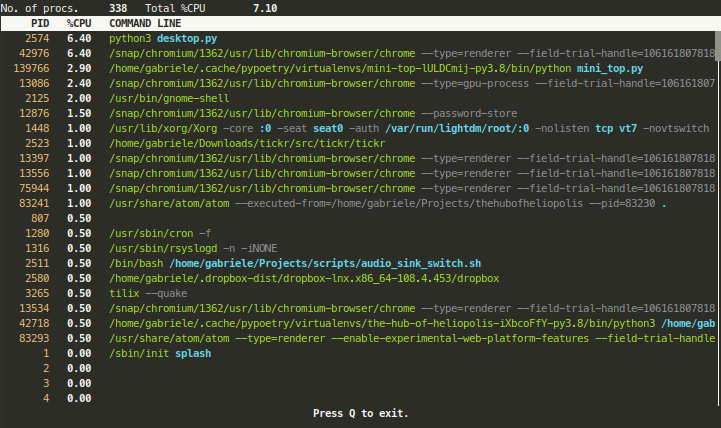

Introduction
Due to the increasing popularity of the sample tools that were included with earlier versions of Austin, I have decided to move them into their own dedicated repositories. The TUI, for example, can now be found at Austin TUI.
Being, as I said, sample tools, the original coding wasn't very pleasant as the
main focus was on how to embed Austin into your application, rather than the
application itself. So the first step was to come up with a good design so that
the code would be tidy and easy to maintain. Austin TUI has also been my very
first attempt at a serious TUI application. The standard approach in Python is
with the curses module, but one
thing that you learn quite quickly is that such a low-level API tends to make
for untidy-looking code pretty easily if you're not careful. There are some way
out of this, in the form of higher level frameworks which offer you many cool
features and abstractions like widgets. None of them, as nice as they are,
were to my taste though.
My previous experiences with UI have almost always revolved around the notion of resource files. That is, the various bits of the user interface, like the main window, configuration and about dialogs, were all described by some DSL living in the project folder as resource files. You can take Glade as an example, which is also the tool that inspired the solution that I ended up developing and adopting for Austin TUI. With Glade, a GTK UI is described by an XML document, which is then parsed at runtime to produce the actual UI. What I wanted for Austin TUI was something similar so that I could de-clutter the Python code from all the UI definition logic, and focus only on the other aspects of a UI project, like event handling. I also wanted something that played nicely with the MVC design pattern and, as we shall see briefly, the main concept behind Austin TUI is indeed that of a view.
The View Object
The central object of the Austin TUI is the View object. This is responsible
for refreshing the interface as well as exposing the event handlers for events
like key presses. The view itself is not the UI though, but it contains a
reference to it via the root_widget. The novelty in Austin TUI is that we want
to partially build a view, or at least the UI part, using a resource file.
So take a look at the following minimalist example.
1 2 3 4 5 6 7 8 9 10 11 12 13 14 | <?xml version="1.0" encoding="UTF-8" ?>
<aui:MinimalView xmlns:aui="http://austin.p403n1x87.com/ui" name="minimal_view">
<aui:Window name="main">
<aui:Label name="label"
text="Hello World"
align="center" />
</aui:Window>
<!-- Signal mappings -->
<aui:signal key="q" handler="on_quit" />
</aui:MiniTop>
|
minimal-view.xml
The above XML document describes a view with two main components: a Window
element, which provides the root node for the UI, and a signal to bind the
method on_quit to the key q. The UI itself contains a single label that will
display the text Hello World. When we run an application that uses this UI, we
expect to see the text Hello World centred on the screen and we also expect to
exit as soon as we press Q.
So what do we need to make the above UI work? With the framework included in
Austin TUI, all that we need to do is declare a subclass of View with the same
name as the root node of the XML document, that is MinimalView in this case,
and then build the actual view object using the ViewBuilder class, like so
1 2 3 4 5 6 7 8 9 10 11 12 13 14 15 16 17 18 19 20 21 22 23 24 | import asyncio
from austin_tui.view import View, ViewBuilder
class MinimalView(View):
def on_quit(self, data=None):
raise KeyboardInterrupt("quit signal")
def main():
with open("minimal-view.xml") as view_stream:
view = ViewBuilder.from_stream(view_stream)
view.open()
try:
asyncio.get_event_loop().run_forever()
except KeyboardInterrupt:
view.close()
print("Bye!")
if __name__ == "__main__":
main()
|
This is all the Python code required to build a minimalist TUI that displays a
label on the screen and that quits whenever the user presses Q. Things we
notice from this example are
- we are using
asyncioto handle user events on the UI; this means that we can schedule our own asynchronous task without making the UI unresponsive; - we use the static method
from_streamof theViewBuilderclass to build a UI from file; if the file resided inside a Python module we could have used thefrom_resourcestatic method instead for convenience; - we call the
openmethod on the view object to display the UI; - we call the
closemethod on the view object to close the UI and restore the terminal to its original status.
In this particular example, we make the on_quit event handler simulate a
keyboard interrupt and we handle KeyboardInterrupt to quit nicely.
The Widgets
Austin TUI uses the widget abstraction too. Elements like Window and Label
that we have seen above are all exposed by the Austin TUI library via the
austin_tui.widgets.catalog sub-module. A window is a simple logical container
that can hold a single child, spanning the full content of the window. In the
example above, the only child of the window is the Label widget identified by
the name label. If you want to add multiple children to the window, you would
want to include an intermediate Box container widget which acts as an HTML5
flex container. Let's see how we can build a simple UI for a minimalist top
utility.
1 2 3 4 5 6 7 8 9 10 11 12 13 14 15 16 17 18 19 20 21 22 23 24 25 26 27 28 29 30 31 32 33 34 35 36 37 38 39 40 41 42 43 44 45 46 47 48 49 50 51 52 53 54 55 56 57 58 59 60 61 62 63 64 65 66 67 68 69 70 71 72 73 | <?xml version="1.0" encoding="UTF-8" ?>
<aui:MiniTop xmlns:aui="http://austin.p403n1x87.com/ui" name="tui">
<aui:Window name="main">
<aui:Box name="main_box" flow="v">
<aui:Box name="overview_box" flow="h">
<aui:Label name="nprocs_label"
text="No. of procs."
width="16" />
<aui:Label name="nprocs"
align="center"
width="8"
bold="true" />
<aui:Label name="cpu_label"
text="Total %CPU"
width="16" />
<aui:Label name="cpu"
align="right"
width="6"
bold="true" />
</aui:Box>
<aui:Box name="table_header" flow="h">
<aui:Label name="own"
text="PID"
align="right"
width="8"
bold="true"
reverse="true" />
<aui:Label name="proc_cpu"
text="%CPU"
align="center"
width="10"
bold="true"
reverse="true" />
<aui:Label name="cmdline"
text="COMMAND LINE"
bold="true"
reverse="true" />
</aui:Box>
<aui:ScrollView name="proc_view">
<aui:Table name="table" columns="3" />
</aui:ScrollView>
<aui:Label name="footer"
text="Press Q to exit."
align="center"
bold="true" />
</aui:Box>
</aui:Window>
<!-- Signal mappings -->
<aui:signal key="q" handler="on_quit" />
<aui:signal key="KEY_UP" handler="on_up" />
<aui:signal key="KEY_DOWN" handler="on_down" />
<aui:signal key="KEY_PPAGE" handler="on_pgup" />
<aui:signal key="KEY_NPAGE" handler="on_pgdown" />
<!-- Palette -->
<aui:palette>
<aui:color name="pid" fg="3" />
<aui:color name="opt" fg="4" />
<aui:color name="cmd" fg="10" />
<aui:color name="args" fg="246" />
</aui:palette>
</aui:MiniTop>
|
mini-top.xml
This is a slightly bigger XML document where we have a few more nested widgets,
as well as a new feature: the palette element. Let's start by looking at the
UI part. We see that the child of the Window element is now a Box with
vertical flow. This means that all the children that we add to this box will
span the whole width and pile up vertically. We use this element to divide the
window into three parts: the top one will hold some summary stats; the middle
will hold the process table; the bottom part is just a label telling us how to
quit the application.
We see that the top part is just another Box, this time with horizontal flow.
Inside we have four labels, two of which have fixed content and act as actual
labels, describing the values that we will update. In this case we will keep
track of the number of active process and the total CPU load.
The middle section of the UI is a ScrollView, which allows us create widgets
within it that overflow the actual terminal size. This is an abstraction that
makes for easy scrolling of overflowing content. In this example, inside the
ScrollView we have a Table object with three columns; these will be the
process ID, the CPU load for the process and its command line.
To make the UI appealing to the eye, we shall make use of colours, and this is
where the new palette element in the XML document steps in. This is used to
give a name to curses colour pairs. In this particular example we are changing
the foreground colour only, but in principle we could change the background as
well by setting the bg attribute. We'll see with the Python code below how to
easily reference the colours in the palette.
Before moving on though, I appreciate that there isn't much of an official
documentation of the UI framework used by the Austin TUI project, and this post
is a way to make up for that as much as possible for now. Looking at all the
sample XML above you might be wondering where all those attributes come from.
For example, when we look at a Label element, we see
<aui:Label name="label"
text="Hello World"
align="center" />
The attributes name, text and align are precisely the arguments of the
__init__ method of the Label class. Hence, if you want to find out which
attributes are available for a certain widget you will have to find it in the
widget collection and look at its constructor.
Every widget has at least the
nameattribute. Every other widget requires its own set of attributes.
Widgets are discovered by the view builder in a dynamic way, which means that
you could sub-class Widget and make your own widgets. If you do so and want
to reference your custom widget in the XML document, all you have to do is use
the class name as element name. For example, if you have something like
from austin_tui.widgets import Widget
class MyWidget(Widget):
def __init__(self, name, some_attribute):
super().__init__(name)
...
then in the XML document you would have something like
<aui:MyWidget name="mywidget_instance" some-attribute="42" >
<!-- any potential children here -->
</aui:MyWidget>
Updating the UI
For the model part of the MVC pattern we don't have much to say here as that
will depend upon your application. In this post I will show you how to make a
minimalist top application, so we can have a look what the model code could look
like in this case a move over to the more interesting bit, which is the C in
MVC.
import psutil
data = sorted(
[
(
p.info["pid"],
p.info["cpu_percent"],
p.info["cmdline"],
)
for p in psutil.process_iter(["pid", "cpu_percent", "cmdline"])
],
key=lambda x: x[1],
reverse=True,
)
If you are familiar with the psutil module, you will see that we are iterating
over all active processes to extract some information from them. In this case we
are interested in the PIDs, the CPU usage and the command line. These three
values will be used to fill in the three columns of the Table widgets that we
introduced in mini-top.xml. As we will see, there is some more code that we
could put into the model part of our design, but for simplicity we will embed
that into the controller. The code below shows you how to update the UI every 2
seconds with fresh system data.
1 2 3 4 5 6 7 8 9 10 11 12 13 14 15 16 17 18 19 20 21 22 23 24 25 26 27 28 29 30 31 32 33 34 35 36 37 38 39 40 41 42 43 44 45 46 47 48 49 50 51 52 53 54 55 56 57 58 59 60 61 62 63 64 65 66 67 68 69 70 71 72 73 74 75 76 77 78 79 80 81 82 83 84 85 86 87 88 89 90 91 | import asyncio
import psutil
from austin_tui.view import View, ViewBuilder
def format_cmdline(cmdline):
if not cmdline:
return ""
cmd, *args = cmdline
args = " ".join(
[arg if arg.startswith("-") else f"<b><opt>{arg}</opt></b>" for arg in args]
)
return f"<cmd>{cmd}</cmd> <args>{args}</args>"
class MiniTop(View):
def on_quit(self, data=None):
raise KeyboardInterrupt("quit signal")
def on_pgdown(self, data=None):
self.proc_view.scroll_down(self.table.height - 1)
self.proc_view.refresh()
return False
def on_pgup(self, data=None):
self.proc_view.scroll_up(self.table.height - 1)
self.proc_view.refresh()
return False
def on_up(self, data=None):
self.proc_view.scroll_up()
self.proc_view.refresh()
return False
def on_down(self, data=None):
self.proc_view.scroll_down()
self.proc_view.refresh()
return False
async def update(self):
while True:
data = sorted(
[
(
p.info["pid"],
p.info["cpu_percent"],
format_cmdline(p.info["cmdline"]),
)
for p in psutil.process_iter(["pid", "cpu_percent", "cmdline"])
],
key=lambda x: x[1],
reverse=True,
)
self.table.set_data(
[
(
self.markup(f"<pid>{pid:8d}</pid>"),
self.markup(f"<b>{cpu:^10.2f}</b>"),
self.markup(format_cmdline(cmdline)),
)
for pid, cpu, cmdline in data
]
)
self.nprocs.set_text(str(len(data)))
self.cpu.set_text(f"{psutil.cpu_percent():3.2f}")
self.table.draw()
self.root_widget.refresh()
await asyncio.sleep(2)
def main():
with open("mini-top.austinui") as austinui:
view = ViewBuilder.from_stream(austinui)
view.open()
loop = asyncio.get_event_loop()
try:
loop.create_task(view.update())
loop.run_forever()
except KeyboardInterrupt:
view.close()
print("Bye!")
if __name__ == "__main__":
main()
|
There are quite a few new things that we need to explan here. First of all we
see that we implement MiniTop as a sub-class of View and we declare all the
required event handlers. We now have an update asynchronous method which we
use to update the UI every 2 seconds. For this to work, we need to create a task
using this method before starting the asyncio event loop (line 83). On line 43
we have the model logic that we just saw above and the interesting part starts
after that. On line 55 we set the collected tabular data to the table widget.
You would have guessed at this point that the way to reference a widget declared
by the XML document is via attribute access on the view object. In this case,
the Table element has the name attribute set to table. Therefore we can
reference it inside the MiniTop instance via self, i.e. self.table. On
lines 66-67 we do a similar thing, i.e. we update the value of the nprocs and
cpu labels with the number of process and the total CPU usage respectively. At
this point, no update is displayed on screen and this is for efficiency reasons.
Once we have modified all the widgets that needed to be updated we can force a
redraw by calling the draw method. This merely updates some buffers in memory,
so in order to flush the changes to screen we have to make a call to the
refresh method on a window-like object. In this case the simplest thing is to
just refresh the whole root widget (line 70).
You might have also noticed that most of the event handlers are explicitly
returning False. That's because we are manually forcing a refresh of the
ScrollView widget (lines 23, 28, 33, 38) and therefore we return False to
avoid propagating the refresh request further up the widget hierarchy for
performance. Here we only needed refreshing the ScrollView; we could have
omitted the manual refresh and returned True with the same result, but the
window that would get refreshed would be the root one.
Spicing Things up with Colours
The last thing we need to have a look at are those mysterious calls to the
markup method and the format_cmdline helper function. This is we we find
references to the palette element in the XML document. Let's have a closer
look at line 58 for example.
self.markup(f"<pid>{pid:8d}</pid>")
The markup method of a View object is a convenience method for creating
strings with multiple attributes, like foreground/background colour, boldface,
reversed, using an XML-like markup syntax. In this particular case, we want to
write the PID on screen using the color pair with name pid declared inside the
palette element of the XML document. On line 59 we use the <b> tag to make
the CPU usage bold. For the command line we do something more complex with the
format_cmdline function. If the command line is non-empty, we use the cmd
colour for the actual command, and the colour args for the rest of the
arguments, with the exception of option values, which are highlighted with the
colour opt and with boldface. This spares us from having to manually split a
string into chunks with different formatting.
When you run the code above you should see something similar to the screenshot below appearing in your terminal.

To quit the application, simply press Q as suggested at the bottom.
You can find a working example of this minimalistic top utility on GitHub if you want to play around with it and familiarise a bit more with the Austin TUI way to resourceful text-based user interfaces.